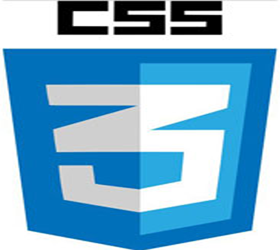

Padrões de Projeto de Sitios Internet I
Objetivos gerais e específicos
Apresentar os fundamentos do HTML (Hypertext Markup Language) com ênfase na semântica do uso dos elementos e nos benefícios do emprego de padrões de codificação. Demonstrar uso do CSS (Cascading Style Sheets) para separar conteúdo e apresentação, de maneira a minimizar tempo de manutenção, aumentar a velocidade do desenvolvimento e desenvolver as habilidades de design.
O que é HTML ?
HTML é uma das linguagens que utilizamos para desenvolver websites. O acrônimo HTML vem do inglês e significa Hypertext Markup Language ou em português Linguagem de Marcação de Hipertexto. O HTML é a liguagem base da internet. Foi criada para ser de fácil entendimento por seres humanos e também por máquinas, como por exemplo o Google ou outros sistemas que percorrem a internet capturando informação.
O que é CSS ?
O Cascading Style Sheets (CSS) é uma folha de estilo composta por camadas e utilizada para definir a apresentação (aparência) em páginas da internet que adotam para o seu desenvolvimento linguagens de marcação (como XML, HTML e XHTML). O CSS define como serão exibidos os elementos contidos no código de uma página da internet e sua maior vantagem é efetuar a separação entre o formato e o conteúdo de um documento.
